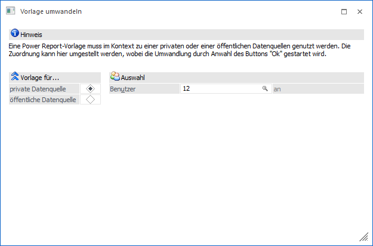
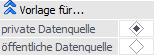

Eine Power Report-Vorlage steht immer im Kontext zu einer persönliche oder einer öffentliche Datenquelle. Soll diese Art der Zuordnung geändert werden, so kann dieses mit Hilfe des Tabellenbuttons "Vorlage umwandeln" (Tabelle "Vorlagen") geschehen.
Hinweis
Diese Funktion steht nur Volladministratoren oder Benutzern mit dem Teiladministrationsrecht "Datenadministration" zur Verfügung.

Folgende Einstellungen stehen zur Verfügung:
Vorlage für…

Ø private Datenquelle / öffentliche Datenquelle
An dieser Stelle wird definiert, ob die Vorlage bei privaten oder öffentlichen Datenquellen angezeigt werden soll.
Hinweis
Wird in Widgets mit einer Datenherkunft ungleich "aktuell" gearbeitet, so muss dies nach der Umwandlung neu zugewiesen werden.
Auswahl

Ø Benutzer
Wenn die Vorlage bei private Datenquellen zur Verfügung stehen soll, so muss an dieser Stelle der neue Besitzer angegeben werden.
Buttons

Ø Ok
Durch Anwahl des Buttons "Ok" bzw. der Taste F5 wird die Vorlage umgewandelt.
Ø Ende
Bei Anwahl des Buttons "Ende" bzw. der Taste ESC wird das Fenster geschlossen.